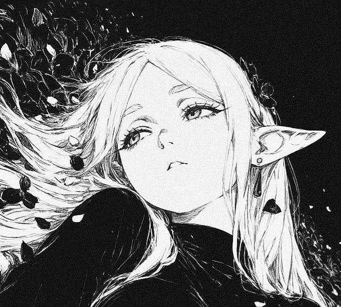

٥
جاري التجهيز...
لا حدود... استمتع
لم تقم بالضغط. سيتم التحميل تلقائياً بعد 10 ثوانٍ...
الحمولة:

بواسطة نصرو بن عياد
جاري التجهيز...
لم تقم بالضغط. سيتم التحميل تلقائياً بعد 10 ثوانٍ...
Starry Break: تطوير الواجهة والهوية الفنية بواسطة نصرو بن عياد (Nasro Ben Ayad).
المشروع الأساسي: مبني على Afterglow Web بواسطة well0nez / m0zz.
jb.js، ps4_offsets.js، وهيكلية الاستضافة الأصلية.
core.js، mem.js، int64.js.
AGPLv3: يغطي afterglow.js ومجموعات الترقيع patchset-*.bin.
MIT License: يغطي ملفات raw13g المرفقة.
إخلاء مسؤولية: لا يتم إعادة توزيع أي كود برمجي مملوك لشركة سوني (Sony). هذا العمل مخصص لأبحاث الحماية والأمان على الأجهزة والعتاد المملوك شخصياً فقط.